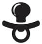

Büyük icat, üstün kurtarıcı, gözümün nuru: Emzik
Kim ne derse desin, ağlayan çocuğu susturmak için en iyi icat. Tabii cep telefonundan sonra. Çocuk dünyaya emme refleksi ile geliyor, bir şekilde bir şeyler emecek ve rahatlayacak. Emzik emmesin de, parmağını mı emsin? Korkma doktorlar 2 yaşına kadar emmesine izin de veriyorlar. Hatta çok ilginç bir bilgi var. Araştırmalar ani bebek ölümlerinde emziğin riski yaklaşık %50 oranında düşürdüğünü gösteriyormuş. Sebebine mantıklı bir açıklama getirememişler ama emzik emen bebeğin kolay kolay yüz üstü yatamayacağına, battaniyesini kafasına kadar çekemeyeceğine kanaat getirmişler. Gayet yeterli bir açıklama. İkna oldum ve üçüne de emzik verdim.
Çocuklarımın üçü de emzik kullandılar. Name’yi emziğe alıştırmam zaman aldı. Pek çok anne çocuğunun emziğe alışmasından rahatsızlık duyar, ama benim ağlamayan veya daha az ağlayan çocuğa ihtiyacım vardı. Name 9 aylık olana kadar envai çeşit emzik denedim, hiçbirini kabul etmedi, 9 aydan sonra ben galip geldim ve emmeye başladı. Tuna ben bu satırları yazarken 33 aylık ve hâlâ uykuya dalarken emiyor. Mete kendi kendine 2 yaşındayken bıraktı. Tuna’nın bırakması için de acele etmiyorum. Sonuçta elbet bir gün bırakacak. Aramızda hâlâ emzik emen varsa bir adım öne çıksın!
Emzikler silikon ve kauçuk emzik olmak üzere ikiye ayrılıyor. Aradaki fark şu: Kauçuk nihayetinde doğal bir madde ve dayanıklı. O yüzden özellikle diş çıkartan bebekler için daha ideal. Ancak suyu içine emdiği için çabuk bozuluyor ve sık değiştirmeniz gerekiyor. Silikon emzikler ise kolay bozulmuyor fakat onlar da diş darbelerine karşı dayanıklı değil. Bu emzikleri de yenidoğanlar için öneriyorlar. Fakat artık çocuklar doğuştan tercihleri olan fazla karakterli bebekler olarak dünyaya geliyorlar ya, ne emeceklerine kendileri karar veriyorlar, sana soran kim? Eğer emzik emmesini istiyorsan, emmediği taktirde farklı markaların farklı emziklerini dene, derim.
Emzik iyi hoş, fakat genelde onları yerden, koltuk altlarından, karyola kenarlarından toplayacaksın. Muslukta yıkamak yeterli olmuyor. O yüzden yıkadıktan sonra sterilazatör yardımıyla ya da kaynar su ile dezenfekte etmek lazım. Bizim emzikler için bir saklama kutumuz var, sterilazatörün yanında duruyor. İçinde her zaman 8-9 tane temiz emziğimiz bulunur ki arkadaşlar ihtiyaç duyduklarında krize girmeden yetiştirebilelim.
Emzik reyonuna gidince göreceksin, emzik ipleri var. Bunlar yere düşmeleri engelliyor. İpi çok uzun olmayanları tercih ettim, sonuçta uyurken boğazına dolanabilir. Bir de emzik kutuları var, genelde emzik ipleriyle aynı rafta oluyorlar. Bu ürünler özellikle dışarı çıkarken yanına alacağın yedek emzikler için ideal. Bazen o kadar çok düşürüyorlar ki yanına aldığın emzik de kirleniyor, hatta ne olur ne olmaz diye aldığın üçüncü emzik de! Lanet olsun ki, yıkayacak, kaynar suda bekletecek imkan da yok… İtiraf ediyorum, işte o çaresiz ve bir emzik yüzünden köşeye sıkıştığım anlarda, kirli olan emzikler arasında oylama yapıp en az kirli olduğuna inandığım emziği başımı başka tarafa doğru çevirip ona doğru uzatıyorum. Neeee, ben vermedim, kendi aldı.